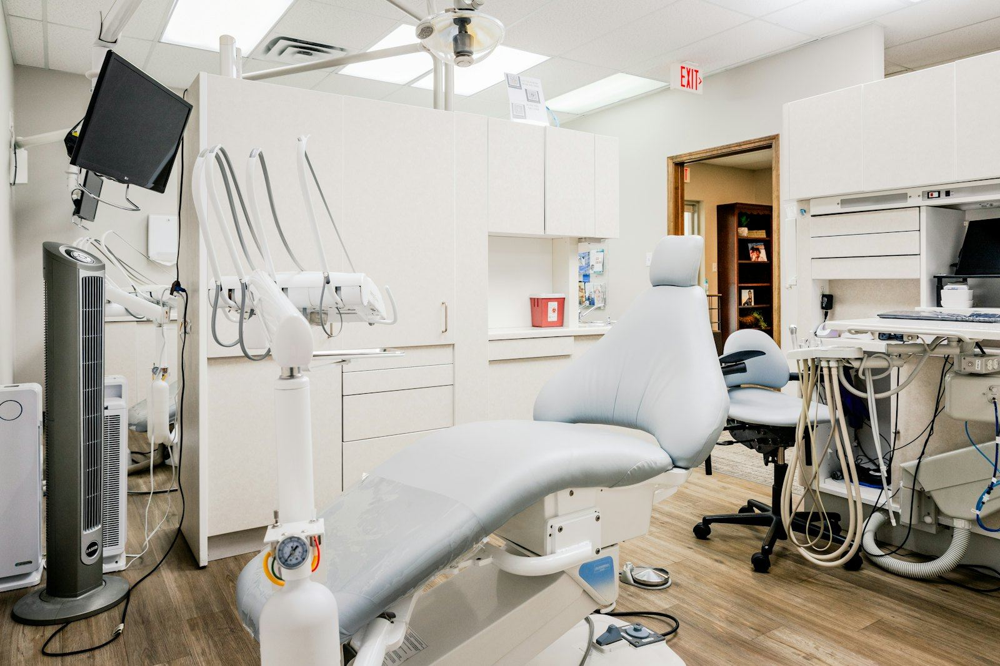

Accueil / Le cabinet
Le cabinet et l'équipe
Un cabinet dentaire de quartier, moderne et chaleureux, à Okala.

Notre engagement
Prendre le temps de comprendre
Chaque patient est reçu sans précipitation. Le docteur explique l'examen avant de commencer, et les résultats à la fin, écran à l'appui.
- Urgences reçues dans la journée
- Fauteuils et matériel modernes
- Hygiène et confidentialité respectées à chaque étape
- Lien direct avec votre médecin prescripteur
L'équipe
Ceux qui vous accueillent
GM
Dr Galant MEZUI NZUE
Chirurgien-dentiste
E
Estelle
Assistante dentaire
B
Brice
Assistant dentaire
N
Nadine
Accueil et secrétariat
Équipement
Notre équipement
Radio numérique
Moins de rayons, image affichée tout de suite à l'écran.
Stérilisation
Instruments stérilisés et emballés pour chaque patient.
Détartreur à ultrasons
Un nettoyage efficace et doux pour les gencives.
Liste du matériel à confirmer avec le cabinet.
Envie d'un sourire en pleine forme ?
Prenez rendez-vous en ligne, nous vous confirmons le créneau par WhatsApp.